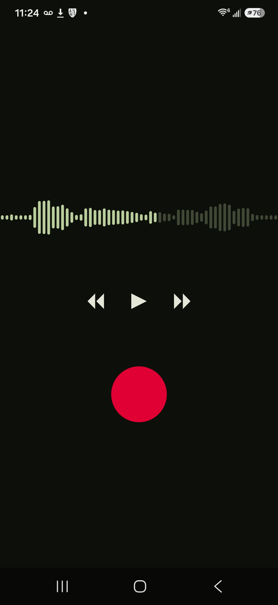

apps
Tools and software I've made.

Loopback
A music practice tool I built to take quick recordings of my instrument or voice, listen back for feedback, then iterate. This quick loop allows for refining and sculpting. The UI is dead simple and geared for this purpose. It doesn't save any files to prevent filling up all of your storage space.